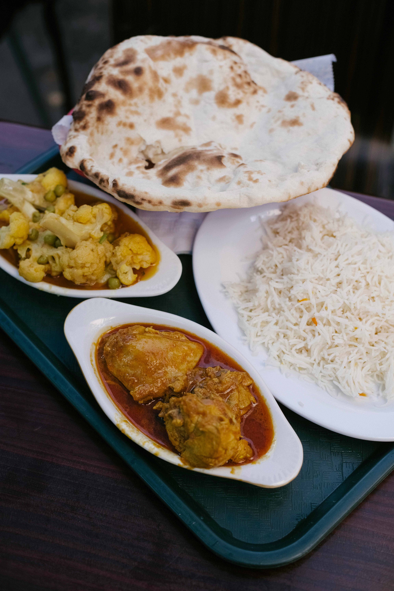

Picture of a tasty curryl!yum.
i really like curry......
ingredients
- meat 1kg
- bowl of rice
- peas
- sauce jar
steps to yum town!
- cook meat in a pre-heated pan with oil
- put the rice on the hob and bring to boil then simmer
- drain the rice and add the cooked meat and rice in a saucepan
- add the sauce and peas cook for 10 mins low heat
- enjoy
home